Snapshot of October 29, 2026. This dossier describes the four repositories as they stood that day; the projects have moved on since, and the repositories are the authority. Underlined links lead to the sources, frozen at their state of that day.
Dossier 2 · the engine
gnostral.rs
An open lab trying to run large artificial-intelligence models on a modest graphics card — and publishing its measurements, including the disappointing ones.
Research v0.8.0 MIT licence
In one picture
Picture a warehouse and a small counter. The counter is the graphics card: narrow, but very fast. The warehouse is main memory: huge, but slow to serve from.
A 30-billion-parameter model does not fit on the counter. The trick is to put only the three billion pieces needed right now on it, and fetch the others from the warehouse only when they are used. That is what gnostral.rs is about.
The problem, then the trick
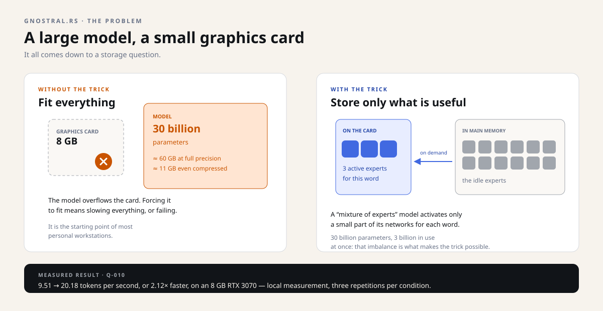
The reference machine is not a datacenter server: an RTX 3070 with 8 GB of graphics memory and 32 GB of main memory. It is a personal-workstation configuration — and that is exactly what makes the research interesting.
The headline result: by keeping the always-used parts on the card and borrowing the quantised experts from main memory, throughput goes from 9.51 to 20.18 tokens per second, or 2.12 times faster. Measured locally, three repetitions per condition, responses identical byte for byte.
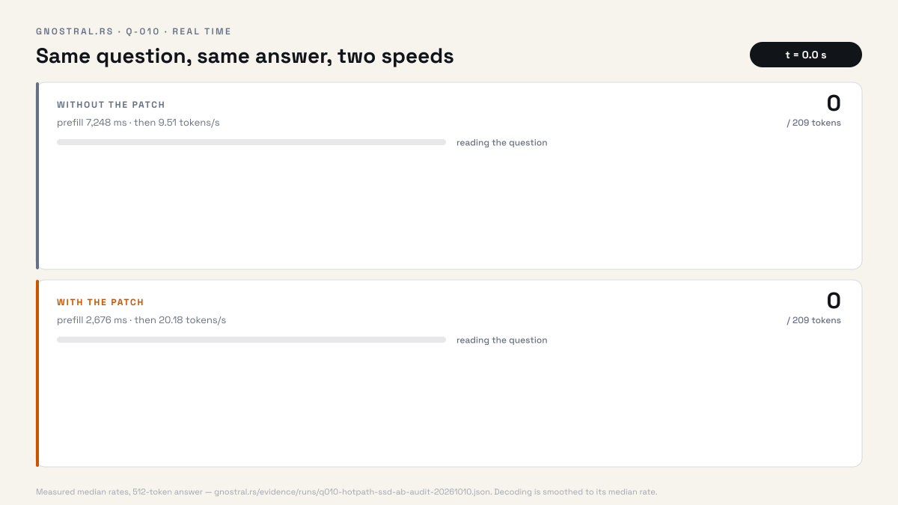
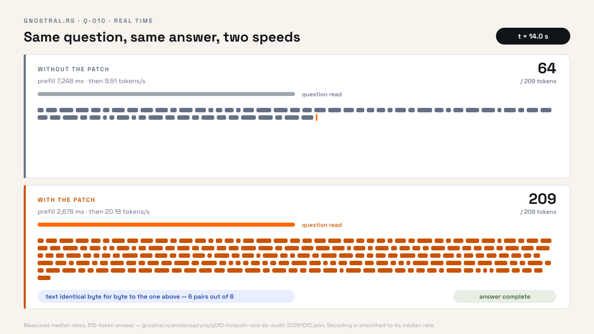
What was measured — and within what frame
| Milestone | Result | What it does not say |
|---|---|---|
| Borrowed experts Q-010 |
9.51 → 20.18 tokens/s on a 512-token answer, median of three repetitions, 2.12× | Not faster than llama.cpp (34.54 tokens/s on the same machine); not valid for every architecture. |
| Placement at load time Q-011 |
22/21/21 layers on the card → 13/12/13 under a memory reservation | Initial placement only; no migration while serving. |
| One engine, three families Q-012 |
3/3: dense model, embeddings, quantised MoE | Three successive servers; no co-residence, no production stability. |
| A real dense process Q-013-C |
Exact semantic answer "GNOSTRAL"; +8 MiB of GPU memory after shutdown | A single model, a short-lived server, not a public API. |
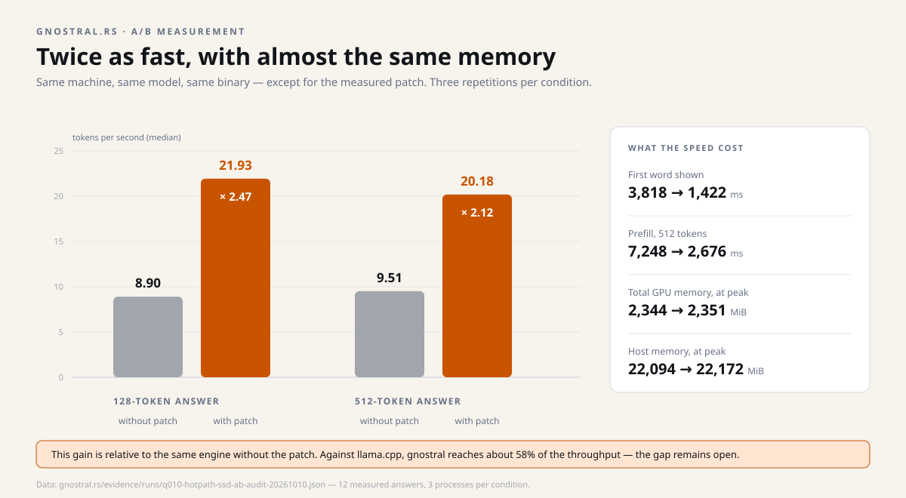
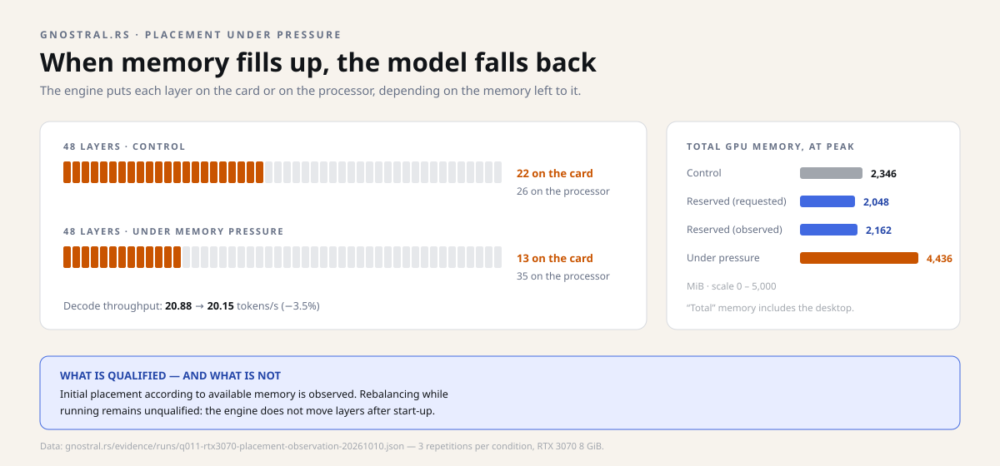
Twelve answers, not an average
A "2.12×" is a median. Behind it are twelve measured answers: three processes without the patch and three with it, each asked for a 128-token then a 512-token answer. The two clouds never touch: the slowest patched answer (19.48 tokens/s) is still twice as fast as the fastest unpatched one (10.12).
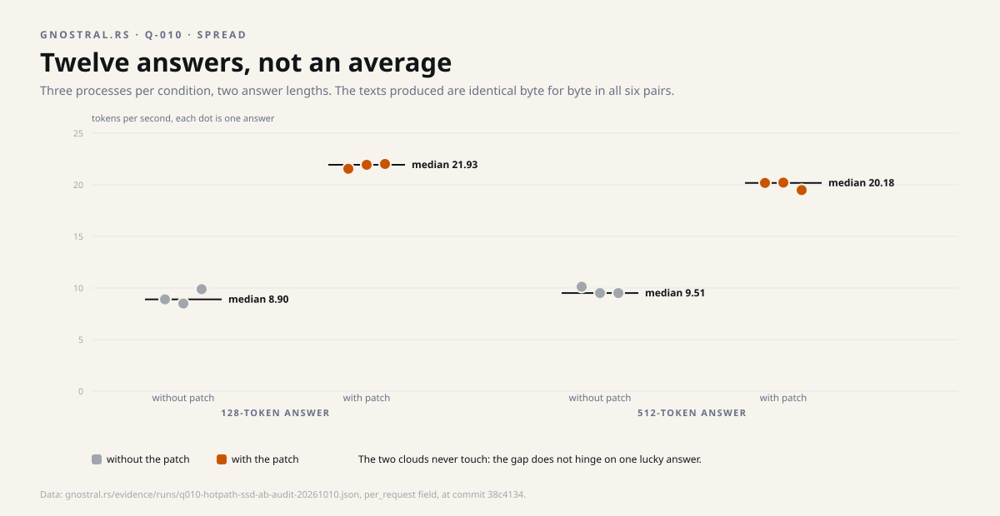
The data, answer by answer
| Answer | Without the patch (tokens/s) | With the patch (tokens/s) |
|---|---|---|
| 128 tokens, process 1 | 8.90 | 21.55 |
| 128 tokens, process 2 | 8.49 | 21.93 |
| 128 tokens, process 3 | 9.88 | 22.02 |
| 512 tokens, process 1 | 10.12 | 20.18 |
| 512 tokens, process 2 | 9.51 | 20.21 |
| 512 tokens, process 3 | 9.51 | 19.48 |
One executable, three model families
Milestone Q-012 asks another question: can the same executable serve models of different kinds? Three families, one after another: a dense model that writes text, an embeddings model that turns sentences into vectors, and the large quantised MoE. All three answer correctly — the embeddings model, for instance, rates two related sentences much closer (0.78) than two unrelated ones (0.17).
Above all, the chart shows where each model puts its weights. The 30-billion-parameter MoE takes 2.4 GB on the card and 19 GB in main memory: that is the dossier's trick, measured. The first run, built without the expert-residency feature, climbed to 6.8 GB on the card and timed out; it stays on record, and a guard now refuses a binary that forgets it.
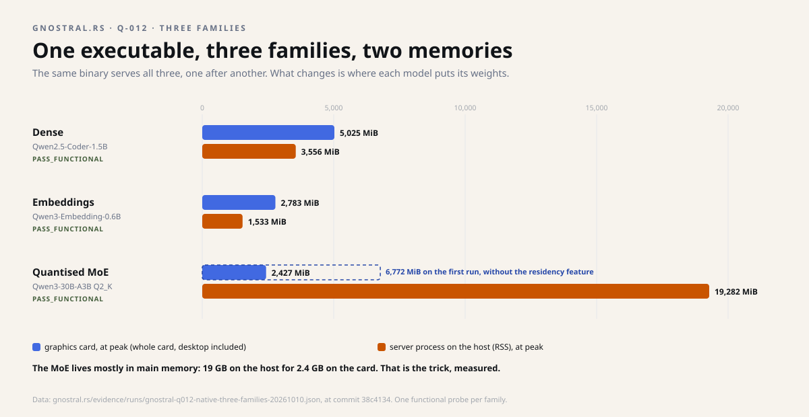
Every figure has its report, its protocol and its limits. The repository explicitly refuses to publish a figure without the evidence that goes with it — including when the evidence contradicts a more flattering claim.
Compared with what, exactly?
A "2.12× faster" means nothing without its point of comparison. Here, the reference is not another piece of software: it is the same engine, one version earlier.
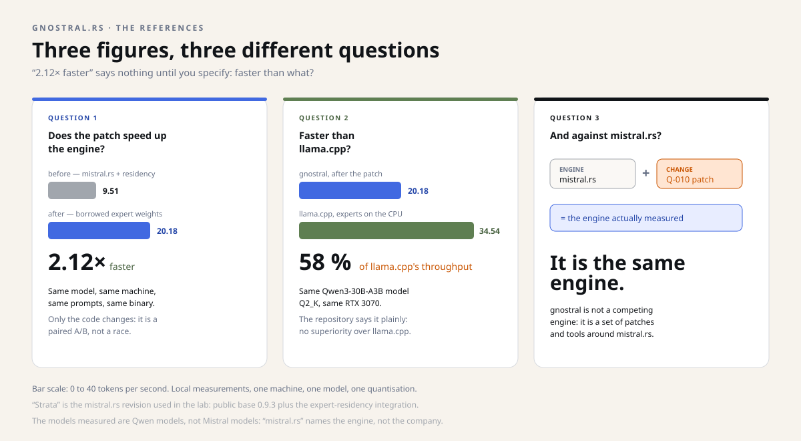
Concretely, "Strata" is the revision of mistral.rs used in the lab: public version 0.9.3, plus an expert-residency integration. The 9.51 tokens/s measure that engine before the patch; the 20.18 measure the same binary, rebuilt with a single function changed — the quantised expert weights are borrowed instead of being copied on every call.
Against llama.cpp, on the other hand, the comparison exists and it is unfavourable: 34.54 tokens/s for llama.cpp against 20.18 for gnostral, on the same model and the same card. The repository's report says so explicitly: these gains do not establish superiority over llama.cpp's CPU-MoE options.
As for mistral.rs, it is not an opponent: it is the engine in which the patch is applied. gnostral is not a competing engine — it is a set of patches, typed contracts and measurement tools around mistral.rs. Comparing against it would be like comparing a car with its own engine.
mistral.rs is an inference engine written in Rust. Mistral AI is a company that makes models. The two are unrelated, and the models measured here are Qwen models, not Mistral models.
Saying "faster than Mistral" therefore makes no sense until you say which one you mean — and, if it is the engine, which version serves as the reference.
The exact wording is: "2.12× faster than the same mistral.rs revision without the patch, and still 58% of llama.cpp's throughput on this model". It is less spectacular, but it is true, dated and verifiable.
How a measurement becomes evidence
The project's most solid contribution may not be the speed gain, but the method. Six steps, always the same, and none can be skipped.
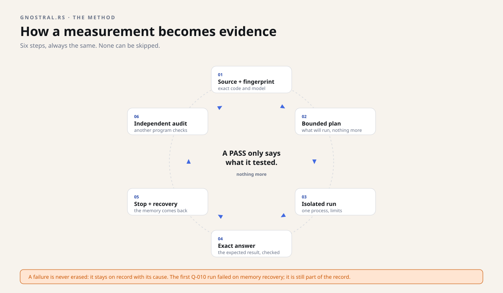
Concretely: the code and the model are identified by a fingerprint (SHA), a plan describes exactly what will run, a single process is started within limits, a precise answer is checked, the process is stopped, the memory is checked to have come back, and then an independent program redoes the checks.
Order matters. A server can answer a health check while its weights are not yet loaded. gnostral.rs therefore distinguishes eight states, from the mere fact of being "declared in the documentation" up to "qualified by an independent audit".
The eight states of truth, plainly
- Declared — the source or the provider says the operation exists.
- Planned — a request matches a precise capability and piece of evidence; no right to execute is granted.
- HTTP-ready — the health endpoint answers. That is not inference yet.
- Semantically ready — an independent test passes on the exact engine and model.
- Serving — only the admitted, bounded operation continues.
- Stopped / unloaded — processes and requests are cancelled or finished, the unload is acknowledged.
- Memory returned — system observations show the return to the announced envelope.
- Qualified — an independent auditor checks the identities, the negative checks and the non-claims.
Does the memory come back?
The loop's sixth step — stopping and recovery — is the one that fails the most runs. After each shutdown, what is still occupied on the graphics card is measured. The gate is set before the run: ±128 MiB. A fast run that leaves memory behind is refused.
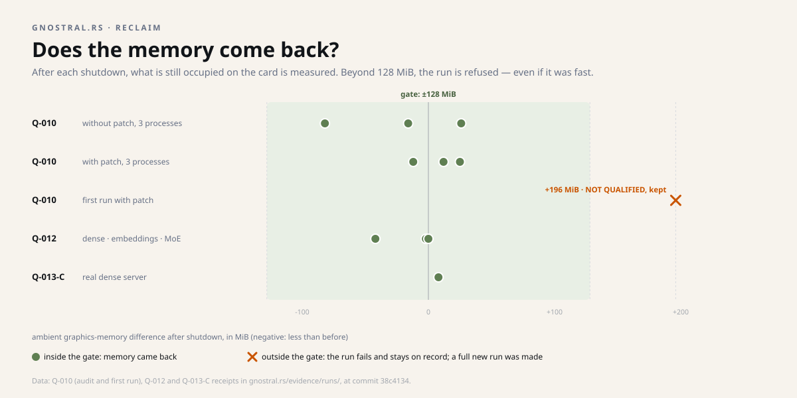
What it is not
- Not a server ready to deploy. It is not a standalone replacement for mistral.rs, llama.cpp, Candle or vLLM.
- No hot model switching. The sequence A → B → A under a single supervisor has not been demonstrated.
- No secured public API. The driver talks to localhost on a fixed port, without authenticating a hostile peer.
- No multi-user service. No control plane or availability commitment has been ratified.
- No guarantee on your hardware. The figures come from one precise configuration and are explicitly not portable.
Why the failures are public
The first Q-010 run failed: graphics memory did not come back within the expected margin (+196 MiB against a ±128 MiB tolerance). The first Q-012 run failed too: a compile-time feature was missing, and the MoE model timed out.
Both failures are still on the record. It is a methodological choice, not an affectation: a result whose misses you do not know is not reusable. And a figure that cannot be contradicted is not a measurement; it is a claim.
The same principle applies to the Bonsai benchmark: the reference kept is 35.2 tokens per second, not the more flattering claim of 40 — for lack of sufficient evidence.
History: fifteen quests in fifteen days
gnostral.rs moves forward by quests: each opens a precise question and closes with a written decision, including when the decision is "not qualified". The public log counts fifteen between October 7 and 21, 2026.
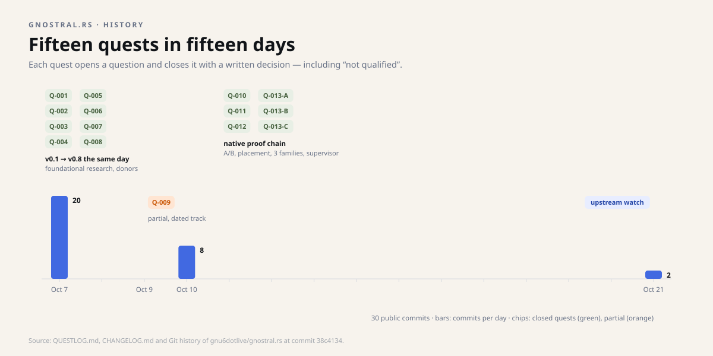
Projects studied, and turned down
Part of the work is examining other engines before touching them. The repository keeps its refusals as carefully as its adoptions:
xInfer — not qualified
A clean build failure against CUDA 13.4, model loads running out of memory. Adoption refused: the lab does not turn into a repair shop for an upstream project.
zLLM — blocked
A Gemma model served correctly, but the adaptive-placement promise could not be tested: the 17 to 19 GB download would have eaten nearly half of the free disk margin.
UniLLM — studied
Its registry and lifecycle ideas are adapted; its mocked telemetry is rejected. The rule that came out of it: write "unknown" rather than a plausible value.
A corrected claim
The very first quest, Q-001, measured nothing new: it withdrew a figure. A Bonsai benchmark claimed 40 tokens per second; for lack of sufficient evidence, the repository kept 35.2 and never published the 40. So the project starts with a correction — a choice of method.
Projections: the roadmap
The target fits in one sentence: an inspectable, Rust-first, local inference control plane for constrained hardware — choosing the right engine for each model, bounding resources, proving readiness, stopping cleanly, accounting for performance. Compute kernels and expert placement stay the business of each engine.
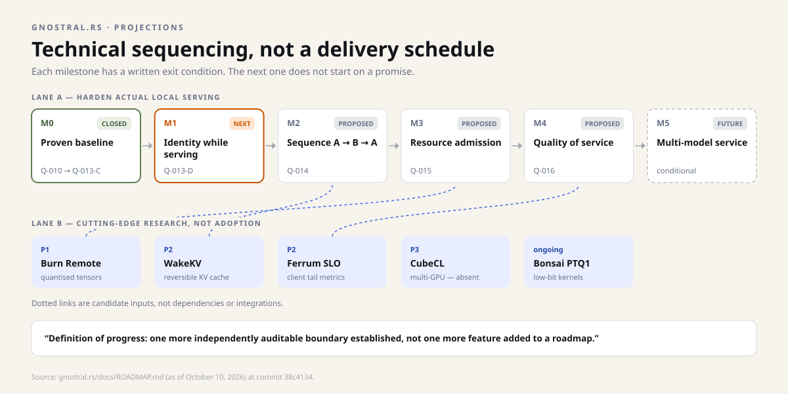
Research, in parallel
A watch on five leads — quantised tensor transport (Burn), client-side latency metrics (Ferrum), a reversible KV cache (WakeKV), several cards (CubeCL), low-bit kernels (Bonsai). Each has its first falsifiable experiment; none is a dependency, and none may silently change the pinned engine.
What will not be promised
No public hosted API, no production-performance claim, no broad portability until the matching gate has passed. A failed run remains first-class evidence, even when a later run succeeds.
What it changes, depending on who you are
Curious about local AI
You understand why a model does not "fit", and what each placement choice costs. The dossier's analogies are enough; the repository provides the details.
Developer
The repository contains a typed engine contract, a bounded process harness, plans tied to a fingerprint and measurement receipts in JSON. Much of it can be tested without a GPU.
Decision-maker or funder
The asset is not a finished product: it is a discipline of evidence, applied to a problem most teams prefer to work around by buying hardware.
Going further
Technical — the repository's words
MoE ("mixture of experts"): an architecture where each token activates only a subset of the networks. Q2_K / Q3_K quantisation: compressing the weights to 2–3 bits, which cuts memory sharply at the cost of a little quality. Token: a fragment of a word; throughput is measured in tokens per second. Residency: where a piece of the model is actually loaded.
Language: Rust for the contracts, kernels and harness; Python for the experiment driver and the auditor. Licence: MIT for the original material; upstream projects keep their licences and attribution.
Checking without a graphics card
The repository provides a thirty-second evaluation: engine-contract tests, expert-residency tests, Python unit tests, then two scripts checking public hygiene and version identity. None of these checks needs a GPU.
A real experiment, on the other hand, requires exact weights and executable, plus an isolated, qualified workstation. The reproduction contract says so explicitly.